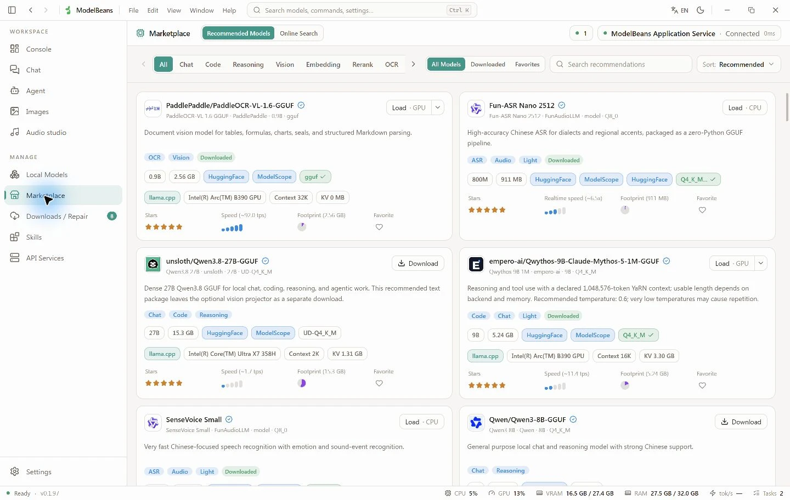
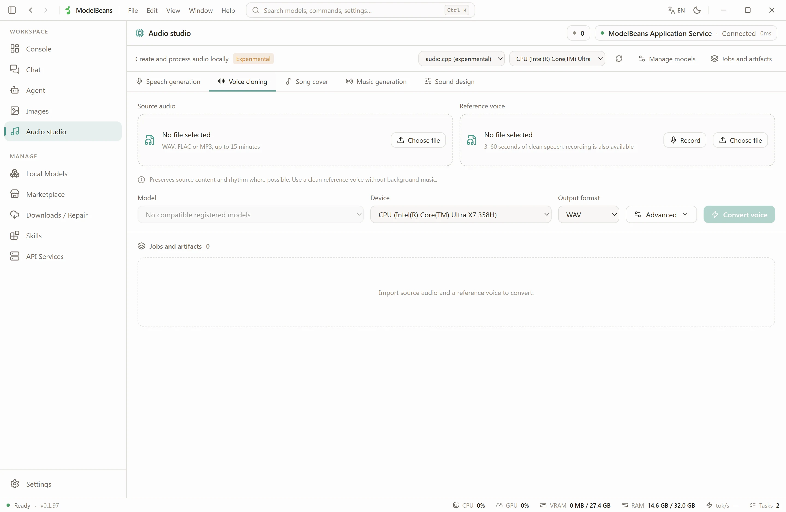
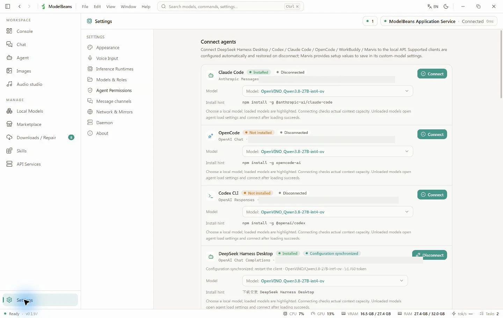

Test it on your own machine
Built-in lightweight performance and agent-readiness checks help you explore runtime behavior and tool use. A full BeansEval evaluation application is planned as a separate release.
Discover models, chat, create images and audio, connect your favorite agents, and build your own apps. ModelBeans brings these ways of using local AI into one desktop workspace.
The full installer includes RuntimeShare; models are downloaded separately. Please read the release compatibility notes.

Browse and download models from Hugging Face and ModelScope, or import files you already have. A curated catalog organized by use helps you start with what you want to do.
RuntimeShare integrates engines including llama.cpp, OpenVINO, ONNX Runtime, stable-diffusion.cpp, audio.cpp, and Strata, reducing separate environment setup. Availability depends on your hardware, drivers, and model format.
Alongside chat, vision, and image generation, the audio studio offers five workflows: speech generation, voice cloning, song covers, music generation, and sound design. Choose a compatible model, prepare your inputs, and run a task.
The audio studio is experimental. Supported tasks, languages, and quality vary by model; some model combinations still have known limitations.

The built-in agent shares the platform’s model selection and loading workflow. Pick a workspace and use a local model or a configured cloud model to try coding, file processing, and tool-based tasks, without installing another agent client.
The agent is still evolving. Results depend on the model and configuration. Checkpoints restore covered files, not every side effect of a command. Automatic smart routing is not promised in this release.
Use local inference or configure a cloud model.
Inspect tool activity, approve operations, add instructions, or stop a run.
Inspect file changes and restore workspace checkpoints when needed.
A central place to connect familiar agents: select and load a model, check context capacity, and configure supported clients automatically. Try local inference while keeping the tools you already use.
Marvis requires saving the generated connection details manually. Some clients need environment variables or a restart. Connection compatibility does not guarantee success on complex tasks.

Built-in lightweight performance and agent-readiness checks help you explore runtime behavior and tool use. A full BeansEval evaluation application is planned as a separate release.
Organize local services with model aliases and roles. Point an alias such as code to your chosen model and let clients use a stable name. OpenAI-style APIs and selected Ollama and Anthropic compatibility are available; coverage is endpoint-specific.
Connect scripts, plugins, and applications through the local API. RuntimeShare supplies the shared inference runtime, with further integration options through a standalone service process and SDK.
Download, load, and try a model in ModelBeans, then call it over HTTP. For deeper integration, explore the embedded-service examples: your host starts a dedicated service process, waits for readiness, calls the model, and shuts the service down. The desktop window does not need to stay open.
Embedding here means a separate service process, not an in-process DLL. A standalone developer bundle is still pending. The examples are integration starters and require matching service and runtime files.
POST /v1/chat/completions
Authorization: Bearer YOUR_LOCAL_API_KEY
Content-Type: application/json
{
"model": "code",
"messages": [
{"role": "user", "content": "Hello!"}
],
"max_tokens": 128,
"stream": false
}Illustrative request: use the address, key, and code alias from your own API service configuration.
ModelBeans is developed and tested on Windows PCs with Intel and AMD integrated graphics. These are the platforms supported for the initial release. You do not need a discrete graphics card to get started with local AI.
Both hardware families are used for day-to-day development and testing.
Linux code is already in place. A release will follow validation on Linux hardware.
Support will be added after we obtain suitable hardware for integration and testing.
Available inference backends and models depend on the GPU model, drivers, model format, and available memory. Platform support does not mean every backend supports both hardware families.
After release, get the full Windows x64 installer from GitHub Releases. RuntimeShare is included; model weights are downloaded separately. Disk and memory requirements vary by model.
Browse Hugging Face or ModelScope in the marketplace, or import a local file. Pick a model that fits your machine, choose an available device, and review loading settings.
Start with a chat, then explore audio, images, or the agent. If you already use an agent client, open Connect agents in Settings and follow its setup flow.
Hi, I’m the person behind ModelBeans. I’m building it in my spare time, with help from GPT and Claude. I started because running models on my own computer felt far too complicated and fragmented: downloading and managing models, setting up different inference engines, checking operating system and hardware requirements, understanding resource use and performance, and connecting agent tools. Every step could mean more research, configuration, and trial and error.
I want ModelBeans to bring these steps together in one platform and take care of as much of the setup and management as possible. That leaves you more time to use local models to get things done, explore ideas, or build and share your own applications. Making that whole journey easier is the direction I’m working toward.
ModelBeans also includes a built-in agent. I’ll keep improving it alongside the local model platform, gradually turning model management, multiple inference backends, resource awareness, and performance evaluation into practical advantages for getting tasks done. My hope is for it to become better at making use of the models and resources on your computer, and grow into a useful agent with a character of its own.
There are rough edges, and models and devices I haven’t tested. If you give it a try, I’d love to hear what worked, what got in your way, and what you wish it could do next.
— ModelBeans
Report a bug or share an idea ↗Thank you to the model authors and upstream maintainers whose work makes much of this possible.